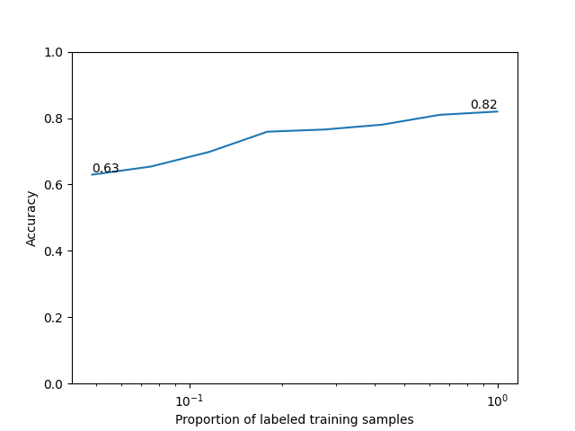

Note
Go to the end to download the full example code.
Self-Supervised Learning with I-JEPA on MedMNIST3D¶
This example demonstrates how to pretrain a 3D vision transformer with I-JEPA [1] on a MedMNIST3D dataset [2] using the nidl library. It will also show you how to evaluate the learned representations with a simple linear probe.
I-JEPA: the key idea behind I-JEPA is to learn representations by predicting masked-out image blocks from their surrounding context in the latent space . This is the main difference with Masked Autoencoders (MAE) which predicts the masked-out blocks in the pixel space.
3D adaptation: I-JEPA is designed to be flexible. Even if the original implementation only used 2d images, its extension to 3d volumes is straightforward. There are two key differences with the 2d case: the tokenization is performed with 3D patches, and the positional embeddings are 3D as well. As for the masking strategy, it follows the same random block subsampling strategy as in 2d.
In this tutorial, we will follow these steps:
Load a MedMNIST3D dataset.
Build a 3D vision transformer encoder.
Train an I-JEPA model, or optionally load pretrained weights from the Hugging Face Hub.
Evaluate the pretrained encoder on the downstream classification task with a logistic regression probe.
In this example we use OrganMNIST3D, one of the 3D datasets distributed by
MedMNIST. MedMNIST3D datasets are lightweight 3D medical image classification
benchmarks standardized to a common spatial size, which makes them convenient
for prototyping self-supervised pipelines.
Setup¶
This example requires medmnist in addition to nidl. If you want to load
pretrained weights from the Hugging Face Hub, you also need
huggingface_hub installed in your environment.
from __future__ import annotations
import os
from typing import Callable, Optional
import matplotlib.pyplot as plt
import medmnist
import numpy as np
import torch
from lightning_fabric import seed_everything
from medmnist import INFO
from sklearn.linear_model import LogisticRegression
from sklearn.metrics import accuracy_score
from torch.utils.data import DataLoader
from torchvision.transforms import Compose
from nidl.estimators.ssl import IJEPA
from nidl.utils.weights import Weights
from nidl.volume.backbones import VisionTransformer3D
from nidl.volume.transforms.augmentation import RandomResizedCrop
from nidl.volume.transforms.preprocessing import ZNormalization
We define some global parameters that will be used throughout the example.
Training a 3D I-JEPA model can take substantial time depending on your
hardware. By default, this example trains a lightweight configuration that is
suitable for a tutorial. If you later publish pretrained weights to the
Hugging Face Hub, set load_pretrained = True and fill the corresponding
repository information below.
Data-related parameters
# Directory where to download MedMNIST data
data_dir = "/tmp/medmnist"
# Directory where to cache optional pretrained weights
model_dir = "/tmp/nidl_example_ijepa_medmnist"
# MedMNIST3D dataset to use
dataset_name = "organmnist3d"
# Spatial size used by MedMNIST+ for 3D datasets
img_size = 64
# Whether to load a pretrained checkpoint from HF or train locally
load_pretrained = True
# Fill these two values once a checkpoint is published on HF
hf_repo_id = "neurospin/nidl_example_ijepa_medmnist"
hf_checkpoint = "nidl_example_ijepa_medmnist.pt"
Reproducibility and training configuration
# What accelerator to use: GPU if available, else CPU
accelerator = "gpu" if torch.cuda.is_available() else "cpu"
# Parameters for the data loaders. Reduce them if you run out of memory.
batch_size = 16
num_workers = 4
# Training configuration
max_epochs = 20
learning_rate = 3e-4
weight_decay = 5e-4
random_seed = 42
seed_everything(random_seed)
rd_generator = np.random.default_rng(seed=random_seed)
Data preparation¶
We first define a small MedMNIST3D dataset wrapper and the transforms used for self-supervised pretraining and downstream evaluation.
class MedMNIST3DDataset:
"""Simple wrapper around a MedMNIST3D split."""
def __init__(
self,
dataset_name: str,
root: str,
split: str,
transform: Optional[Callable] = None,
size: int = 64,
download: bool = True,
):
dataset_name = dataset_name.lower()
if dataset_name not in INFO:
raise ValueError(
f"Unknown MedMNIST dataset '{dataset_name}'. "
f"Available datasets include: {sorted(INFO.keys())}"
)
if "3d" not in dataset_name:
raise ValueError(
f"This example is written for MedMNIST3D datasets, got "
f"'{dataset_name}'."
)
info = INFO[dataset_name]
dataset_cls = getattr(medmnist, info["python_class"])
os.makedirs(root, exist_ok=True)
self.dataset = dataset_cls(
split=split,
root=root,
transform=transform,
download=download,
size=size,
as_rgb=False,
)
def __len__(self):
return len(self.dataset)
def __getitem__(self, index):
return self.dataset[index]
train_transform = Compose(
[
RandomResizedCrop(img_size, scale=(0.5, 1.0)),
ZNormalization(),
lambda x: torch.from_numpy(x).float(),
]
)
eval_transform = Compose(
[
ZNormalization(),
lambda x: torch.from_numpy(x).float(),
]
)
We create one dataset for self-supervised training, and labeled datasets for linear probing.
ssl_dataset = MedMNIST3DDataset(
dataset_name=dataset_name,
root=data_dir,
split="train",
transform=train_transform,
size=img_size,
)
train_xy_dataset = MedMNIST3DDataset(
dataset_name=dataset_name,
root=data_dir,
split="train",
transform=eval_transform,
size=img_size,
)
test_xy_dataset = MedMNIST3DDataset(
dataset_name=dataset_name,
root=data_dir,
split="test",
transform=eval_transform,
size=img_size,
)
0%| | 0.00/361M [00:00<?, ?B/s]
0%| | 32.8k/361M [00:00<21:26, 281kB/s]
0%| | 65.5k/361M [00:00<21:22, 282kB/s]
0%| | 131k/361M [00:00<14:39, 411kB/s]
0%| | 197k/361M [00:00<16:38, 362kB/s]
0%| | 295k/361M [00:00<12:40, 475kB/s]
0%| | 360k/361M [00:00<12:01, 500kB/s]
0%| | 459k/361M [00:00<10:01, 600kB/s]
0%| | 557k/361M [00:01<08:55, 674kB/s]
0%| | 655k/361M [00:01<08:19, 722kB/s]
0%| | 754k/361M [00:01<07:56, 758kB/s]
0%| | 852k/361M [00:01<07:40, 784kB/s]
0%| | 950k/361M [00:01<07:33, 795kB/s]
0%| | 1.08M/361M [00:01<06:45, 889kB/s]
0%| | 1.18M/361M [00:01<06:54, 868kB/s]
0%| | 1.28M/361M [00:01<07:00, 856kB/s]
0%| | 1.38M/361M [00:01<07:07, 842kB/s]
0%| | 1.47M/361M [00:02<07:09, 838kB/s]
0%| | 1.57M/361M [00:02<07:11, 835kB/s]
0%| | 1.67M/361M [00:02<09:16, 647kB/s]
1%| | 1.84M/361M [00:02<07:12, 832kB/s]
1%| | 1.93M/361M [00:02<07:10, 835kB/s]
1%| | 2.03M/361M [00:02<07:10, 835kB/s]
1%| | 2.13M/361M [00:02<07:09, 836kB/s]
1%| | 2.23M/361M [00:03<07:08, 839kB/s]
1%| | 2.33M/361M [00:03<07:06, 841kB/s]
1%| | 2.46M/361M [00:03<06:29, 923kB/s]
1%| | 2.56M/361M [00:03<06:38, 900kB/s]
1%| | 2.65M/361M [00:03<06:46, 883kB/s]
1%| | 2.79M/361M [00:03<06:15, 955kB/s]
1%| | 2.88M/361M [00:03<06:28, 922kB/s]
1%| | 3.01M/361M [00:03<06:05, 982kB/s]
1%| | 3.15M/361M [00:03<05:49, 1.02MB/s]
1%| | 3.28M/361M [00:04<07:21, 811kB/s]
1%| | 3.41M/361M [00:04<06:42, 889kB/s]
1%| | 3.54M/361M [00:04<06:16, 950kB/s]
1%| | 3.67M/361M [00:04<05:58, 998kB/s]
1%| | 3.80M/361M [00:04<07:22, 808kB/s]
1%| | 3.90M/361M [00:04<07:17, 817kB/s]
1%| | 4.00M/361M [00:05<07:14, 823kB/s]
1%| | 4.13M/361M [00:05<06:35, 902kB/s]
1%| | 4.23M/361M [00:05<06:43, 886kB/s]
1%| | 4.36M/361M [00:05<06:15, 952kB/s]
1%| | 4.49M/361M [00:05<05:56, 1.00MB/s]
1%|▏ | 4.62M/361M [00:05<05:43, 1.04MB/s]
1%|▏ | 4.75M/361M [00:05<05:35, 1.06MB/s]
1%|▏ | 4.88M/361M [00:05<05:29, 1.08MB/s]
1%|▏ | 5.01M/361M [00:05<05:26, 1.09MB/s]
1%|▏ | 5.14M/361M [00:06<05:23, 1.10MB/s]
1%|▏ | 5.31M/361M [00:06<04:58, 1.19MB/s]
2%|▏ | 5.44M/361M [00:06<05:03, 1.17MB/s]
2%|▏ | 5.57M/361M [00:06<05:07, 1.16MB/s]
2%|▏ | 5.70M/361M [00:06<05:09, 1.15MB/s]
2%|▏ | 5.83M/361M [00:06<05:11, 1.14MB/s]
2%|▏ | 5.96M/361M [00:06<06:47, 871kB/s]
2%|▏ | 6.06M/361M [00:07<06:53, 859kB/s]
2%|▏ | 6.16M/361M [00:07<06:59, 846kB/s]
2%|▏ | 6.32M/361M [00:07<05:57, 993kB/s]
2%|▏ | 6.46M/361M [00:07<05:47, 1.02MB/s]
2%|▏ | 6.59M/361M [00:07<05:39, 1.04MB/s]
2%|▏ | 6.72M/361M [00:07<05:34, 1.06MB/s]
2%|▏ | 6.85M/361M [00:07<07:08, 829kB/s]
2%|▏ | 6.95M/361M [00:07<07:06, 831kB/s]
2%|▏ | 7.05M/361M [00:08<07:05, 833kB/s]
2%|▏ | 7.14M/361M [00:08<07:04, 835kB/s]
2%|▏ | 7.24M/361M [00:08<07:03, 836kB/s]
2%|▏ | 7.34M/361M [00:08<07:03, 837kB/s]
2%|▏ | 7.50M/361M [00:08<05:53, 1.00MB/s]
2%|▏ | 7.63M/361M [00:08<05:44, 1.03MB/s]
2%|▏ | 7.77M/361M [00:08<05:35, 1.05MB/s]
2%|▏ | 7.90M/361M [00:08<05:29, 1.07MB/s]
2%|▏ | 8.03M/361M [00:09<05:25, 1.08MB/s]
2%|▏ | 8.16M/361M [00:09<05:23, 1.09MB/s]
2%|▏ | 8.29M/361M [00:09<06:55, 849kB/s]
2%|▏ | 8.39M/361M [00:09<07:00, 839kB/s]
2%|▏ | 8.49M/361M [00:09<07:01, 837kB/s]
2%|▏ | 8.59M/361M [00:09<07:00, 838kB/s]
2%|▏ | 8.68M/361M [00:09<07:00, 839kB/s]
2%|▏ | 8.78M/361M [00:09<07:00, 839kB/s]
2%|▏ | 9.01M/361M [00:10<05:03, 1.16MB/s]
3%|▎ | 9.14M/361M [00:10<05:06, 1.15MB/s]
3%|▎ | 9.27M/361M [00:10<05:07, 1.14MB/s]
3%|▎ | 9.40M/361M [00:10<05:09, 1.14MB/s]
3%|▎ | 9.54M/361M [00:10<06:41, 876kB/s]
3%|▎ | 9.73M/361M [00:10<05:27, 1.08MB/s]
3%|▎ | 9.90M/361M [00:10<05:03, 1.16MB/s]
3%|▎ | 10.0M/361M [00:11<05:05, 1.15MB/s]
3%|▎ | 10.2M/361M [00:11<06:32, 895kB/s]
3%|▎ | 10.3M/361M [00:11<06:10, 949kB/s]
3%|▎ | 10.4M/361M [00:11<05:53, 993kB/s]
3%|▎ | 10.6M/361M [00:11<05:41, 1.03MB/s]
3%|▎ | 10.7M/361M [00:11<05:32, 1.06MB/s]
3%|▎ | 10.8M/361M [00:11<05:26, 1.08MB/s]
3%|▎ | 10.9M/361M [00:11<05:23, 1.08MB/s]
3%|▎ | 11.1M/361M [00:12<05:20, 1.09MB/s]
3%|▎ | 11.2M/361M [00:12<06:50, 853kB/s]
3%|▎ | 11.3M/361M [00:12<06:51, 852kB/s]
3%|▎ | 11.4M/361M [00:12<06:52, 849kB/s]
3%|▎ | 11.5M/361M [00:12<06:19, 923kB/s]
3%|▎ | 11.6M/361M [00:12<06:27, 902kB/s]
3%|▎ | 11.7M/361M [00:12<06:35, 885kB/s]
3%|▎ | 11.8M/361M [00:13<06:40, 872kB/s]
3%|▎ | 11.9M/361M [00:13<06:44, 864kB/s]
3%|▎ | 12.0M/361M [00:13<06:47, 858kB/s]
3%|▎ | 12.1M/361M [00:13<06:49, 853kB/s]
3%|▎ | 12.3M/361M [00:13<06:14, 933kB/s]
3%|▎ | 12.4M/361M [00:13<05:52, 991kB/s]
3%|▎ | 12.5M/361M [00:13<05:38, 1.03MB/s]
3%|▎ | 12.6M/361M [00:13<05:29, 1.06MB/s]
4%|▎ | 12.8M/361M [00:13<05:26, 1.07MB/s]
4%|▎ | 12.9M/361M [00:14<07:01, 826kB/s]
4%|▎ | 13.0M/361M [00:14<07:00, 829kB/s]
4%|▎ | 13.1M/361M [00:14<06:59, 831kB/s]
4%|▎ | 13.2M/361M [00:14<06:58, 832kB/s]
4%|▎ | 13.3M/361M [00:14<06:59, 830kB/s]
4%|▎ | 13.4M/361M [00:14<06:24, 906kB/s]
4%|▎ | 13.5M/361M [00:14<06:33, 884kB/s]
4%|▍ | 13.6M/361M [00:15<06:40, 868kB/s]
4%|▍ | 13.7M/361M [00:15<06:50, 847kB/s]
4%|▍ | 13.8M/361M [00:15<06:51, 845kB/s]
4%|▍ | 14.0M/361M [00:15<06:15, 926kB/s]
4%|▍ | 14.1M/361M [00:15<05:53, 984kB/s]
4%|▍ | 14.2M/361M [00:15<05:40, 1.02MB/s]
4%|▍ | 14.4M/361M [00:15<05:30, 1.05MB/s]
4%|▍ | 14.5M/361M [00:15<05:25, 1.07MB/s]
4%|▍ | 14.6M/361M [00:15<05:20, 1.08MB/s]
4%|▍ | 14.7M/361M [00:16<06:50, 844kB/s]
4%|▍ | 14.8M/361M [00:16<06:51, 842kB/s]
4%|▍ | 15.0M/361M [00:16<06:18, 915kB/s]
4%|▍ | 15.1M/361M [00:16<05:56, 971kB/s]
4%|▍ | 15.2M/361M [00:16<05:41, 1.01MB/s]
4%|▍ | 15.4M/361M [00:16<05:31, 1.04MB/s]
4%|▍ | 15.5M/361M [00:16<05:24, 1.07MB/s]
4%|▍ | 15.6M/361M [00:17<06:53, 836kB/s]
4%|▍ | 15.7M/361M [00:17<06:54, 833kB/s]
4%|▍ | 15.8M/361M [00:17<06:55, 833kB/s]
4%|▍ | 15.9M/361M [00:17<06:55, 832kB/s]
4%|▍ | 16.0M/361M [00:17<06:56, 830kB/s]
4%|▍ | 16.1M/361M [00:17<06:54, 832kB/s]
4%|▍ | 16.2M/361M [00:17<06:53, 835kB/s]
5%|▍ | 16.3M/361M [00:17<06:53, 835kB/s]
5%|▍ | 16.5M/361M [00:18<05:45, 1.00MB/s]
5%|▍ | 16.6M/361M [00:18<05:32, 1.04MB/s]
5%|▍ | 16.7M/361M [00:18<05:24, 1.06MB/s]
5%|▍ | 16.9M/361M [00:18<05:18, 1.08MB/s]
5%|▍ | 17.0M/361M [00:18<05:15, 1.09MB/s]
5%|▍ | 17.1M/361M [00:18<06:45, 848kB/s]
5%|▍ | 17.3M/361M [00:18<06:15, 916kB/s]
5%|▍ | 17.4M/361M [00:19<05:54, 970kB/s]
5%|▍ | 17.5M/361M [00:19<05:39, 1.01MB/s]
5%|▍ | 17.7M/361M [00:19<05:29, 1.04MB/s]
5%|▍ | 17.8M/361M [00:19<05:22, 1.07MB/s]
5%|▍ | 17.9M/361M [00:19<05:16, 1.08MB/s]
5%|▍ | 18.1M/361M [00:19<06:45, 848kB/s]
5%|▌ | 18.2M/361M [00:19<06:14, 916kB/s]
5%|▌ | 18.3M/361M [00:19<05:53, 970kB/s]
5%|▌ | 18.4M/361M [00:20<05:39, 1.01MB/s]
5%|▌ | 18.6M/361M [00:20<07:00, 815kB/s]
5%|▌ | 18.7M/361M [00:20<06:25, 889kB/s]
5%|▌ | 18.9M/361M [00:20<05:36, 1.02MB/s]
5%|▌ | 19.0M/361M [00:20<05:27, 1.05MB/s]
5%|▌ | 19.1M/361M [00:20<05:21, 1.07MB/s]
5%|▌ | 19.3M/361M [00:20<06:44, 845kB/s]
5%|▌ | 19.4M/361M [00:21<06:45, 845kB/s]
5%|▌ | 19.5M/361M [00:21<06:45, 843kB/s]
5%|▌ | 19.6M/361M [00:21<05:45, 991kB/s]
5%|▌ | 19.8M/361M [00:21<05:32, 1.03MB/s]
6%|▌ | 19.9M/361M [00:21<05:23, 1.06MB/s]
6%|▌ | 20.0M/361M [00:21<05:17, 1.07MB/s]
6%|▌ | 20.2M/361M [00:21<06:50, 831kB/s]
6%|▌ | 20.3M/361M [00:22<06:51, 829kB/s]
6%|▌ | 20.3M/361M [00:22<06:54, 823kB/s]
6%|▌ | 20.5M/361M [00:22<06:21, 894kB/s]
6%|▌ | 20.6M/361M [00:22<06:29, 875kB/s]
6%|▌ | 20.7M/361M [00:22<06:36, 860kB/s]
6%|▌ | 20.8M/361M [00:22<06:07, 928kB/s]
6%|▌ | 20.9M/361M [00:22<06:20, 895kB/s]
6%|▌ | 21.0M/361M [00:22<05:57, 953kB/s]
6%|▌ | 21.1M/361M [00:23<06:11, 915kB/s]
6%|▌ | 21.2M/361M [00:23<06:23, 888kB/s]
6%|▌ | 21.3M/361M [00:23<06:31, 870kB/s]
6%|▌ | 21.5M/361M [00:23<05:32, 1.02MB/s]
6%|▌ | 21.6M/361M [00:23<05:24, 1.05MB/s]
6%|▌ | 21.8M/361M [00:23<05:19, 1.06MB/s]
6%|▌ | 21.9M/361M [00:23<06:52, 823kB/s]
6%|▌ | 22.0M/361M [00:23<06:52, 823kB/s]
6%|▌ | 22.1M/361M [00:24<06:18, 896kB/s]
6%|▌ | 22.2M/361M [00:24<05:55, 953kB/s]
6%|▌ | 22.4M/361M [00:24<05:41, 994kB/s]
6%|▌ | 22.5M/361M [00:24<05:31, 1.02MB/s]
6%|▋ | 22.6M/361M [00:24<06:59, 808kB/s]
6%|▋ | 22.7M/361M [00:24<06:57, 812kB/s]
6%|▋ | 22.9M/361M [00:24<05:53, 957kB/s]
6%|▋ | 23.0M/361M [00:25<05:40, 993kB/s]
6%|▋ | 23.2M/361M [00:25<05:33, 1.01MB/s]
6%|▋ | 23.3M/361M [00:25<06:57, 809kB/s]
6%|▋ | 23.4M/361M [00:25<06:55, 813kB/s]
6%|▋ | 23.5M/361M [00:25<06:53, 817kB/s]
7%|▋ | 23.6M/361M [00:25<06:49, 824kB/s]
7%|▋ | 23.7M/361M [00:25<06:47, 829kB/s]
7%|▋ | 23.8M/361M [00:25<06:45, 834kB/s]
7%|▋ | 23.9M/361M [00:26<06:43, 836kB/s]
7%|▋ | 24.0M/361M [00:26<06:43, 837kB/s]
7%|▋ | 24.1M/361M [00:26<06:42, 839kB/s]
7%|▋ | 24.2M/361M [00:26<06:41, 841kB/s]
7%|▋ | 24.3M/361M [00:26<06:40, 842kB/s]
7%|▋ | 24.4M/361M [00:26<06:40, 842kB/s]
7%|▋ | 24.5M/361M [00:26<06:03, 926kB/s]
7%|▋ | 24.6M/361M [00:26<06:13, 901kB/s]
7%|▋ | 24.7M/361M [00:27<05:48, 967kB/s]
7%|▋ | 24.9M/361M [00:27<05:32, 1.01MB/s]
7%|▋ | 25.0M/361M [00:27<05:21, 1.05MB/s]
7%|▋ | 25.1M/361M [00:27<05:14, 1.07MB/s]
7%|▋ | 25.3M/361M [00:27<05:09, 1.09MB/s]
7%|▋ | 25.4M/361M [00:27<06:57, 804kB/s]
7%|▋ | 25.5M/361M [00:27<06:51, 817kB/s]
7%|▋ | 25.6M/361M [00:27<06:47, 823kB/s]
7%|▋ | 25.7M/361M [00:28<08:32, 655kB/s]
7%|▋ | 25.8M/361M [00:28<07:20, 762kB/s]
7%|▋ | 26.0M/361M [00:28<06:04, 921kB/s]
7%|▋ | 26.1M/361M [00:28<05:44, 975kB/s]
7%|▋ | 26.2M/361M [00:28<05:30, 1.01MB/s]
7%|▋ | 26.4M/361M [00:28<06:55, 807kB/s]
7%|▋ | 26.5M/361M [00:29<06:50, 816kB/s]
7%|▋ | 26.6M/361M [00:29<06:47, 822kB/s]
7%|▋ | 26.7M/361M [00:29<06:44, 828kB/s]
7%|▋ | 26.8M/361M [00:29<06:41, 833kB/s]
7%|▋ | 26.9M/361M [00:29<06:39, 837kB/s]
7%|▋ | 27.0M/361M [00:29<06:39, 837kB/s]
7%|▋ | 27.1M/361M [00:29<06:38, 840kB/s]
8%|▊ | 27.2M/361M [00:29<06:37, 842kB/s]
8%|▊ | 27.3M/361M [00:29<06:37, 842kB/s]
8%|▊ | 27.4M/361M [00:30<06:38, 838kB/s]
8%|▊ | 27.5M/361M [00:30<06:41, 832kB/s]
8%|▊ | 27.6M/361M [00:30<06:43, 827kB/s]
8%|▊ | 27.7M/361M [00:30<06:42, 830kB/s]
8%|▊ | 27.8M/361M [00:30<05:33, 1.00MB/s]
8%|▊ | 28.0M/361M [00:30<05:25, 1.03MB/s]
8%|▊ | 28.1M/361M [00:30<05:16, 1.05MB/s]
8%|▊ | 28.2M/361M [00:30<05:11, 1.07MB/s]
8%|▊ | 28.3M/361M [00:31<06:38, 836kB/s]
8%|▊ | 28.4M/361M [00:31<06:37, 838kB/s]
8%|▊ | 28.6M/361M [00:31<05:37, 986kB/s]
8%|▊ | 28.7M/361M [00:31<05:25, 1.02MB/s]
8%|▊ | 28.9M/361M [00:31<05:17, 1.05MB/s]
8%|▊ | 29.0M/361M [00:31<06:39, 833kB/s]
8%|▊ | 29.1M/361M [00:31<06:37, 836kB/s]
8%|▊ | 29.2M/361M [00:32<06:38, 834kB/s]
8%|▊ | 29.3M/361M [00:32<06:36, 837kB/s]
8%|▊ | 29.4M/361M [00:32<06:35, 839kB/s]
8%|▊ | 29.5M/361M [00:32<06:34, 841kB/s]
8%|▊ | 29.6M/361M [00:32<06:34, 842kB/s]
8%|▊ | 29.7M/361M [00:32<06:34, 842kB/s]
8%|▊ | 29.8M/361M [00:32<06:33, 842kB/s]
8%|▊ | 29.9M/361M [00:32<06:33, 843kB/s]
8%|▊ | 30.0M/361M [00:33<06:32, 844kB/s]
8%|▊ | 30.1M/361M [00:33<06:32, 844kB/s]
8%|▊ | 30.2M/361M [00:33<06:32, 844kB/s]
8%|▊ | 30.3M/361M [00:33<06:32, 845kB/s]
8%|▊ | 30.4M/361M [00:33<06:32, 843kB/s]
8%|▊ | 30.5M/361M [00:33<05:56, 929kB/s]
9%|▊ | 30.7M/361M [00:33<04:26, 1.24MB/s]
9%|▊ | 30.9M/361M [00:33<04:34, 1.20MB/s]
9%|▊ | 31.0M/361M [00:33<04:40, 1.18MB/s]
9%|▊ | 31.1M/361M [00:34<04:43, 1.16MB/s]
9%|▊ | 31.3M/361M [00:34<06:12, 886kB/s]
9%|▊ | 31.4M/361M [00:34<05:49, 945kB/s]
9%|▊ | 31.5M/361M [00:34<05:32, 992kB/s]
9%|▉ | 31.7M/361M [00:34<05:20, 1.03MB/s]
9%|▉ | 31.8M/361M [00:34<05:12, 1.06MB/s]
9%|▉ | 31.9M/361M [00:34<05:06, 1.08MB/s]
9%|▉ | 32.0M/361M [00:35<06:29, 846kB/s]
9%|▉ | 32.1M/361M [00:35<06:29, 845kB/s]
9%|▉ | 32.2M/361M [00:35<06:29, 844kB/s]
9%|▉ | 32.3M/361M [00:35<06:30, 843kB/s]
9%|▉ | 32.4M/361M [00:35<06:30, 842kB/s]
9%|▉ | 32.6M/361M [00:35<05:59, 914kB/s]
9%|▉ | 32.7M/361M [00:35<06:10, 886kB/s]
9%|▉ | 32.8M/361M [00:35<05:18, 1.03MB/s]
9%|▉ | 33.0M/361M [00:36<04:29, 1.22MB/s]
9%|▉ | 33.2M/361M [00:36<04:36, 1.19MB/s]
9%|▉ | 33.3M/361M [00:36<04:41, 1.16MB/s]
9%|▉ | 33.4M/361M [00:36<06:11, 884kB/s]
9%|▉ | 33.6M/361M [00:36<05:52, 930kB/s]
9%|▉ | 33.7M/361M [00:36<05:36, 976kB/s]
9%|▉ | 33.8M/361M [00:37<06:54, 791kB/s]
9%|▉ | 34.0M/361M [00:37<05:31, 987kB/s]
9%|▉ | 34.1M/361M [00:37<05:21, 1.02MB/s]
9%|▉ | 34.3M/361M [00:37<05:14, 1.04MB/s]
10%|▉ | 34.4M/361M [00:37<05:10, 1.05MB/s]
10%|▉ | 34.5M/361M [00:37<06:32, 833kB/s]
10%|▉ | 34.6M/361M [00:37<06:32, 832kB/s]
10%|▉ | 34.8M/361M [00:37<06:01, 903kB/s]
10%|▉ | 34.9M/361M [00:38<06:09, 883kB/s]
10%|▉ | 35.0M/361M [00:38<06:17, 864kB/s]
10%|▉ | 35.1M/361M [00:38<06:23, 851kB/s]
10%|▉ | 35.2M/361M [00:38<06:29, 838kB/s]
10%|▉ | 35.3M/361M [00:38<06:31, 833kB/s]
10%|▉ | 35.4M/361M [00:38<06:34, 826kB/s]
10%|▉ | 35.5M/361M [00:38<06:36, 823kB/s]
10%|▉ | 35.6M/361M [00:38<06:35, 824kB/s]
10%|▉ | 35.7M/361M [00:39<06:36, 821kB/s]
10%|▉ | 35.7M/361M [00:39<06:35, 823kB/s]
10%|▉ | 35.8M/361M [00:39<06:36, 821kB/s]
10%|▉ | 35.9M/361M [00:39<06:37, 818kB/s]
10%|▉ | 36.0M/361M [00:39<06:38, 816kB/s]
10%|▉ | 36.1M/361M [00:39<06:34, 825kB/s]
10%|█ | 36.2M/361M [00:39<06:31, 830kB/s]
10%|█ | 36.3M/361M [00:39<06:29, 834kB/s]
10%|█ | 36.4M/361M [00:40<06:28, 837kB/s]
10%|█ | 36.5M/361M [00:40<06:27, 839kB/s]
10%|█ | 36.6M/361M [00:40<06:26, 841kB/s]
10%|█ | 36.7M/361M [00:40<06:25, 842kB/s]
10%|█ | 36.8M/361M [00:40<06:25, 842kB/s]
10%|█ | 37.0M/361M [00:40<05:49, 927kB/s]
10%|█ | 37.1M/361M [00:40<05:59, 902kB/s]
10%|█ | 37.2M/361M [00:40<06:06, 885kB/s]
10%|█ | 37.3M/361M [00:40<06:11, 874kB/s]
10%|█ | 37.4M/361M [00:41<06:16, 861kB/s]
10%|█ | 37.5M/361M [00:41<06:18, 857kB/s]
10%|█ | 37.6M/361M [00:41<06:20, 852kB/s]
10%|█ | 37.7M/361M [00:41<05:46, 933kB/s]
10%|█ | 37.9M/361M [00:41<04:39, 1.16MB/s]
11%|█ | 38.0M/361M [00:41<04:41, 1.15MB/s]
11%|█ | 38.1M/361M [00:41<04:43, 1.14MB/s]
11%|█ | 38.3M/361M [00:41<04:44, 1.14MB/s]
11%|█ | 38.4M/361M [00:41<04:45, 1.13MB/s]
11%|█ | 38.5M/361M [00:42<04:46, 1.13MB/s]
11%|█ | 38.7M/361M [00:42<04:46, 1.13MB/s]
11%|█ | 38.8M/361M [00:42<04:46, 1.13MB/s]
11%|█ | 38.9M/361M [00:42<06:12, 866kB/s]
11%|█ | 39.0M/361M [00:42<06:14, 861kB/s]
11%|█ | 39.2M/361M [00:42<05:46, 929kB/s]
11%|█ | 39.3M/361M [00:42<05:04, 1.06MB/s]
11%|█ | 39.5M/361M [00:43<04:58, 1.08MB/s]
11%|█ | 39.6M/361M [00:43<04:55, 1.09MB/s]
11%|█ | 39.7M/361M [00:43<04:52, 1.10MB/s]
11%|█ | 39.8M/361M [00:43<04:50, 1.11MB/s]
11%|█ | 40.0M/361M [00:43<06:14, 858kB/s]
11%|█ | 40.1M/361M [00:43<06:17, 851kB/s]
11%|█ | 40.2M/361M [00:43<06:19, 846kB/s]
11%|█ | 40.3M/361M [00:43<06:19, 846kB/s]
11%|█ | 40.4M/361M [00:44<06:19, 845kB/s]
11%|█ | 40.5M/361M [00:44<06:20, 844kB/s]
11%|█ | 40.6M/361M [00:44<05:47, 925kB/s]
11%|█▏ | 40.7M/361M [00:44<05:26, 982kB/s]
11%|█▏ | 40.9M/361M [00:44<05:13, 1.02MB/s]
11%|█▏ | 41.0M/361M [00:44<06:36, 808kB/s]
11%|█▏ | 41.1M/361M [00:44<06:32, 816kB/s]
11%|█▏ | 41.2M/361M [00:45<05:57, 896kB/s]
11%|█▏ | 41.3M/361M [00:45<06:03, 882kB/s]
11%|█▏ | 41.5M/361M [00:45<05:36, 950kB/s]
11%|█▏ | 41.5M/361M [00:45<05:47, 921kB/s]
12%|█▏ | 41.6M/361M [00:45<05:56, 898kB/s]
12%|█▏ | 41.7M/361M [00:45<06:02, 883kB/s]
12%|█▏ | 41.8M/361M [00:45<06:07, 871kB/s]
12%|█▏ | 41.9M/361M [00:45<06:10, 863kB/s]
12%|█▏ | 42.0M/361M [00:45<06:12, 857kB/s]
12%|█▏ | 42.2M/361M [00:46<05:40, 937kB/s]
12%|█▏ | 42.3M/361M [00:46<05:21, 993kB/s]
12%|█▏ | 42.4M/361M [00:46<05:09, 1.03MB/s]
12%|█▏ | 42.6M/361M [00:46<05:00, 1.06MB/s]
12%|█▏ | 42.7M/361M [00:46<04:55, 1.08MB/s]
12%|█▏ | 42.8M/361M [00:46<06:18, 841kB/s]
12%|█▏ | 42.9M/361M [00:46<06:18, 842kB/s]
12%|█▏ | 43.0M/361M [00:47<06:18, 842kB/s]
12%|█▏ | 43.1M/361M [00:47<06:18, 842kB/s]
12%|█▏ | 43.2M/361M [00:47<06:18, 841kB/s]
12%|█▏ | 43.3M/361M [00:47<06:17, 842kB/s]
12%|█▏ | 43.5M/361M [00:47<05:17, 1.00MB/s]
12%|█▏ | 43.6M/361M [00:47<05:07, 1.03MB/s]
12%|█▏ | 43.7M/361M [00:47<05:01, 1.05MB/s]
12%|█▏ | 43.9M/361M [00:47<04:58, 1.06MB/s]
12%|█▏ | 44.0M/361M [00:47<04:34, 1.16MB/s]
12%|█▏ | 44.2M/361M [00:48<04:20, 1.22MB/s]
12%|█▏ | 44.3M/361M [00:48<04:28, 1.18MB/s]
12%|█▏ | 44.5M/361M [00:48<05:59, 883kB/s]
12%|█▏ | 44.6M/361M [00:48<05:38, 936kB/s]
12%|█▏ | 44.7M/361M [00:48<05:24, 977kB/s]
12%|█▏ | 44.9M/361M [00:48<05:14, 1.01MB/s]
12%|█▏ | 45.0M/361M [00:48<05:06, 1.03MB/s]
12%|█▏ | 45.1M/361M [00:49<05:00, 1.05MB/s]
13%|█▎ | 45.3M/361M [00:49<06:23, 825kB/s]
13%|█▎ | 45.4M/361M [00:49<06:23, 825kB/s]
13%|█▎ | 45.4M/361M [00:49<06:23, 824kB/s]
13%|█▎ | 45.5M/361M [00:49<06:23, 824kB/s]
13%|█▎ | 45.6M/361M [00:49<06:25, 818kB/s]
13%|█▎ | 45.7M/361M [00:49<06:25, 819kB/s]
13%|█▎ | 45.8M/361M [00:49<06:24, 822kB/s]
13%|█▎ | 45.9M/361M [00:50<06:23, 822kB/s]
13%|█▎ | 46.0M/361M [00:50<06:23, 822kB/s]
13%|█▎ | 46.1M/361M [00:50<06:25, 819kB/s]
13%|█▎ | 46.2M/361M [00:50<06:24, 820kB/s]
13%|█▎ | 46.3M/361M [00:50<06:23, 821kB/s]
13%|█▎ | 46.4M/361M [00:50<06:25, 818kB/s]
13%|█▎ | 46.5M/361M [00:50<06:22, 823kB/s]
13%|█▎ | 46.7M/361M [00:50<05:47, 907kB/s]
13%|█▎ | 46.8M/361M [00:51<05:55, 885kB/s]
13%|█▎ | 46.9M/361M [00:51<05:33, 944kB/s]
13%|█▎ | 47.0M/361M [00:51<05:48, 903kB/s]
13%|█▎ | 47.1M/361M [00:51<05:58, 877kB/s]
13%|█▎ | 47.2M/361M [00:51<06:05, 861kB/s]
13%|█▎ | 47.4M/361M [00:51<04:27, 1.18MB/s]
13%|█▎ | 47.5M/361M [00:51<04:32, 1.15MB/s]
13%|█▎ | 47.7M/361M [00:51<04:36, 1.14MB/s]
13%|█▎ | 47.8M/361M [00:52<04:38, 1.12MB/s]
13%|█▎ | 47.9M/361M [00:52<04:41, 1.11MB/s]
13%|█▎ | 48.1M/361M [00:52<06:09, 848kB/s]
13%|█▎ | 48.2M/361M [00:52<06:12, 842kB/s]
13%|█▎ | 48.3M/361M [00:52<06:13, 838kB/s]
13%|█▎ | 48.4M/361M [00:52<06:15, 833kB/s]
13%|█▎ | 48.5M/361M [00:52<06:17, 829kB/s]
13%|█▎ | 48.6M/361M [00:52<05:17, 984kB/s]
13%|█▎ | 48.8M/361M [00:53<05:08, 1.01MB/s]
14%|█▎ | 48.9M/361M [00:53<05:02, 1.03MB/s]
14%|█▎ | 49.0M/361M [00:53<06:24, 812kB/s]
14%|█▎ | 49.1M/361M [00:53<06:24, 813kB/s]
14%|█▎ | 49.3M/361M [00:53<05:50, 892kB/s]
14%|█▎ | 49.3M/361M [00:53<05:55, 879kB/s]
14%|█▎ | 49.4M/361M [00:53<05:59, 869kB/s]
14%|█▎ | 49.6M/361M [00:54<05:31, 940kB/s]
14%|█▎ | 49.7M/361M [00:54<05:41, 913kB/s]
14%|█▍ | 49.8M/361M [00:54<05:49, 892kB/s]
14%|█▍ | 49.9M/361M [00:54<05:55, 877kB/s]
14%|█▍ | 50.0M/361M [00:54<05:28, 949kB/s]
14%|█▍ | 50.1M/361M [00:54<05:39, 918kB/s]
14%|█▍ | 50.2M/361M [00:54<05:47, 896kB/s]
14%|█▍ | 50.3M/361M [00:54<05:53, 880kB/s]
14%|█▍ | 50.4M/361M [00:54<05:26, 953kB/s]
14%|█▍ | 50.5M/361M [00:55<05:37, 920kB/s]
14%|█▍ | 50.7M/361M [00:55<04:52, 1.06MB/s]
14%|█▍ | 50.8M/361M [00:55<04:47, 1.08MB/s]
14%|█▍ | 51.0M/361M [00:55<06:08, 843kB/s]
14%|█▍ | 51.1M/361M [00:55<05:16, 982kB/s]
14%|█▍ | 51.3M/361M [00:55<04:43, 1.09MB/s]
14%|█▍ | 51.4M/361M [00:55<04:41, 1.10MB/s]
14%|█▍ | 51.5M/361M [00:56<04:39, 1.11MB/s]
14%|█▍ | 51.7M/361M [00:56<04:38, 1.11MB/s]
14%|█▍ | 51.8M/361M [00:56<04:37, 1.12MB/s]
14%|█▍ | 51.9M/361M [00:56<04:37, 1.12MB/s]
14%|█▍ | 52.1M/361M [00:56<04:36, 1.12MB/s]
14%|█▍ | 52.2M/361M [00:56<04:35, 1.12MB/s]
14%|█▍ | 52.3M/361M [00:56<04:35, 1.12MB/s]
15%|█▍ | 52.5M/361M [00:56<05:56, 866kB/s]
15%|█▍ | 52.6M/361M [00:57<05:32, 930kB/s]
15%|█▍ | 52.7M/361M [00:57<05:16, 977kB/s]
15%|█▍ | 52.9M/361M [00:57<04:42, 1.09MB/s]
15%|█▍ | 53.1M/361M [00:57<03:52, 1.33MB/s]
15%|█▍ | 53.3M/361M [00:57<03:49, 1.34MB/s]
15%|█▍ | 53.4M/361M [00:57<04:53, 1.05MB/s]
15%|█▍ | 53.6M/361M [00:57<04:49, 1.06MB/s]
15%|█▍ | 53.7M/361M [00:58<04:45, 1.08MB/s]
15%|█▍ | 53.8M/361M [00:58<04:42, 1.09MB/s]
15%|█▍ | 54.0M/361M [00:58<05:58, 857kB/s]
15%|█▍ | 54.1M/361M [00:58<06:00, 852kB/s]
15%|█▍ | 54.2M/361M [00:58<06:01, 850kB/s]
15%|█▌ | 54.3M/361M [00:58<06:01, 849kB/s]
15%|█▌ | 54.4M/361M [00:58<07:42, 664kB/s]
15%|█▌ | 54.5M/361M [00:59<07:15, 705kB/s]
15%|█▌ | 54.6M/361M [00:59<06:55, 739kB/s]
15%|█▌ | 54.7M/361M [00:59<06:05, 839kB/s]
15%|█▌ | 54.9M/361M [00:59<04:27, 1.15MB/s]
15%|█▌ | 55.1M/361M [00:59<04:28, 1.14MB/s]
15%|█▌ | 55.2M/361M [00:59<04:29, 1.14MB/s]
15%|█▌ | 55.3M/361M [00:59<04:30, 1.13MB/s]
15%|█▌ | 55.4M/361M [01:00<05:49, 874kB/s]
15%|█▌ | 55.5M/361M [01:00<05:52, 867kB/s]
15%|█▌ | 55.6M/361M [01:00<05:54, 862kB/s]
15%|█▌ | 55.7M/361M [01:00<05:57, 855kB/s]
15%|█▌ | 56.0M/361M [01:00<04:22, 1.16MB/s]
16%|█▌ | 56.1M/361M [01:00<04:25, 1.15MB/s]
16%|█▌ | 56.2M/361M [01:00<04:27, 1.14MB/s]
16%|█▌ | 56.4M/361M [01:00<04:28, 1.14MB/s]
16%|█▌ | 56.5M/361M [01:00<04:29, 1.13MB/s]
16%|█▌ | 56.6M/361M [01:01<05:50, 871kB/s]
16%|█▌ | 56.7M/361M [01:01<05:52, 864kB/s]
16%|█▌ | 56.8M/361M [01:01<05:55, 858kB/s]
16%|█▌ | 56.9M/361M [01:01<05:56, 854kB/s]
16%|█▌ | 57.0M/361M [01:01<05:57, 852kB/s]
16%|█▌ | 57.1M/361M [01:01<05:28, 928kB/s]
16%|█▌ | 57.2M/361M [01:01<05:36, 903kB/s]
16%|█▌ | 57.4M/361M [01:02<05:14, 968kB/s]
16%|█▌ | 57.5M/361M [01:02<05:00, 1.01MB/s]
16%|█▌ | 57.6M/361M [01:02<04:50, 1.04MB/s]
16%|█▌ | 57.8M/361M [01:02<04:24, 1.15MB/s]
16%|█▌ | 57.9M/361M [01:02<04:25, 1.14MB/s]
16%|█▌ | 58.1M/361M [01:02<04:26, 1.14MB/s]
16%|█▌ | 58.2M/361M [01:02<04:27, 1.13MB/s]
16%|█▌ | 58.3M/361M [01:02<04:28, 1.13MB/s]
16%|█▌ | 58.5M/361M [01:02<04:29, 1.13MB/s]
16%|█▌ | 58.6M/361M [01:03<05:50, 865kB/s]
16%|█▌ | 58.7M/361M [01:03<05:30, 916kB/s]
16%|█▋ | 58.9M/361M [01:03<05:13, 964kB/s]
16%|█▋ | 59.0M/361M [01:03<05:01, 1.00MB/s]
16%|█▋ | 59.1M/361M [01:03<04:51, 1.04MB/s]
16%|█▋ | 59.2M/361M [01:03<04:45, 1.06MB/s]
16%|█▋ | 59.4M/361M [01:04<06:03, 831kB/s]
16%|█▋ | 59.5M/361M [01:04<05:12, 966kB/s]
17%|█▋ | 59.7M/361M [01:04<05:01, 1.00MB/s]
17%|█▋ | 59.8M/361M [01:04<04:53, 1.03MB/s]
17%|█▋ | 59.9M/361M [01:04<04:47, 1.05MB/s]
17%|█▋ | 60.1M/361M [01:04<04:44, 1.06MB/s]
17%|█▋ | 60.2M/361M [01:04<06:02, 832kB/s]
17%|█▋ | 60.3M/361M [01:04<06:03, 829kB/s]
17%|█▋ | 60.4M/361M [01:05<06:02, 831kB/s]
17%|█▋ | 60.5M/361M [01:05<06:01, 832kB/s]
17%|█▋ | 60.6M/361M [01:05<06:02, 830kB/s]
17%|█▋ | 60.7M/361M [01:05<06:02, 830kB/s]
17%|█▋ | 60.8M/361M [01:05<06:03, 826kB/s]
17%|█▋ | 60.9M/361M [01:05<06:03, 827kB/s]
17%|█▋ | 61.0M/361M [01:05<05:31, 906kB/s]
17%|█▋ | 61.1M/361M [01:05<05:11, 964kB/s]
17%|█▋ | 61.2M/361M [01:06<05:25, 922kB/s]
17%|█▋ | 61.4M/361M [01:06<05:07, 975kB/s]
17%|█▋ | 61.5M/361M [01:06<05:23, 929kB/s]
17%|█▋ | 61.6M/361M [01:06<05:05, 981kB/s]
17%|█▋ | 61.7M/361M [01:06<05:20, 935kB/s]
17%|█▋ | 61.8M/361M [01:06<05:34, 897kB/s]
17%|█▋ | 61.9M/361M [01:06<05:39, 882kB/s]
17%|█▋ | 62.0M/361M [01:06<05:43, 871kB/s]
17%|█▋ | 62.1M/361M [01:06<05:16, 946kB/s]
17%|█▋ | 62.2M/361M [01:07<05:27, 915kB/s]
17%|█▋ | 62.5M/361M [01:07<03:34, 1.39MB/s]
17%|█▋ | 62.7M/361M [01:07<03:33, 1.40MB/s]
17%|█▋ | 62.8M/361M [01:07<04:36, 1.08MB/s]
17%|█▋ | 63.0M/361M [01:07<04:33, 1.09MB/s]
17%|█▋ | 63.1M/361M [01:07<04:31, 1.10MB/s]
17%|█▋ | 63.2M/361M [01:07<04:29, 1.11MB/s]
18%|█▊ | 63.4M/361M [01:08<04:28, 1.11MB/s]
18%|█▊ | 63.5M/361M [01:08<04:27, 1.12MB/s]
18%|█▊ | 63.6M/361M [01:08<05:43, 868kB/s]
18%|█▊ | 63.8M/361M [01:08<04:39, 1.07MB/s]
18%|█▊ | 64.0M/361M [01:08<04:35, 1.08MB/s]
18%|█▊ | 64.1M/361M [01:08<04:32, 1.09MB/s]
18%|█▊ | 64.2M/361M [01:08<04:29, 1.10MB/s]
18%|█▊ | 64.4M/361M [01:08<04:28, 1.11MB/s]
18%|█▊ | 64.5M/361M [01:09<05:44, 863kB/s]
18%|█▊ | 64.6M/361M [01:09<05:45, 859kB/s]
18%|█▊ | 64.7M/361M [01:09<05:47, 854kB/s]
18%|█▊ | 64.8M/361M [01:09<05:48, 852kB/s]
18%|█▊ | 64.9M/361M [01:09<05:19, 927kB/s]
18%|█▊ | 65.0M/361M [01:09<05:28, 904kB/s]
18%|█▊ | 65.1M/361M [01:09<05:34, 886kB/s]
18%|█▊ | 65.2M/361M [01:10<05:38, 874kB/s]
18%|█▊ | 65.3M/361M [01:10<05:13, 946kB/s]
18%|█▊ | 65.4M/361M [01:10<05:23, 916kB/s]
18%|█▊ | 65.5M/361M [01:10<05:32, 891kB/s]
18%|█▊ | 65.7M/361M [01:10<05:10, 954kB/s]
18%|█▊ | 65.8M/361M [01:10<04:55, 1.00MB/s]
18%|█▊ | 65.9M/361M [01:10<04:46, 1.03MB/s]
18%|█▊ | 66.1M/361M [01:10<04:39, 1.06MB/s]
18%|█▊ | 66.2M/361M [01:10<04:36, 1.07MB/s]
18%|█▊ | 66.3M/361M [01:11<04:34, 1.08MB/s]
18%|█▊ | 66.5M/361M [01:11<04:31, 1.09MB/s]
18%|█▊ | 66.6M/361M [01:11<04:28, 1.10MB/s]
18%|█▊ | 66.7M/361M [01:11<05:46, 850kB/s]
18%|█▊ | 66.8M/361M [01:11<05:21, 917kB/s]
19%|█▊ | 67.0M/361M [01:11<05:03, 970kB/s]
19%|█▊ | 67.1M/361M [01:11<04:51, 1.01MB/s]
19%|█▊ | 67.2M/361M [01:12<04:43, 1.04MB/s]
19%|█▊ | 67.4M/361M [01:12<04:37, 1.06MB/s]
19%|█▊ | 67.5M/361M [01:12<04:32, 1.08MB/s]
19%|█▊ | 67.6M/361M [01:12<04:29, 1.09MB/s]
19%|█▊ | 67.8M/361M [01:12<05:44, 852kB/s]
19%|█▉ | 67.9M/361M [01:12<05:45, 849kB/s]
19%|█▉ | 68.0M/361M [01:12<05:46, 846kB/s]
19%|█▉ | 68.1M/361M [01:12<05:46, 846kB/s]
19%|█▉ | 68.2M/361M [01:13<05:47, 844kB/s]
19%|█▉ | 68.3M/361M [01:13<05:17, 923kB/s]
19%|█▉ | 68.4M/361M [01:13<05:25, 901kB/s]
19%|█▉ | 68.5M/361M [01:13<05:03, 966kB/s]
19%|█▉ | 68.6M/361M [01:13<05:15, 929kB/s]
19%|█▉ | 68.7M/361M [01:13<05:23, 905kB/s]
19%|█▉ | 68.8M/361M [01:13<05:30, 886kB/s]
19%|█▉ | 68.9M/361M [01:13<05:35, 872kB/s]
19%|█▉ | 69.0M/361M [01:14<05:38, 863kB/s]
19%|█▉ | 69.2M/361M [01:14<04:45, 1.02MB/s]
19%|█▉ | 69.3M/361M [01:14<04:37, 1.05MB/s]
19%|█▉ | 69.4M/361M [01:14<04:31, 1.08MB/s]
19%|█▉ | 69.6M/361M [01:14<04:27, 1.09MB/s]
19%|█▉ | 69.7M/361M [01:14<04:25, 1.10MB/s]
19%|█▉ | 69.8M/361M [01:14<04:23, 1.11MB/s]
19%|█▉ | 70.0M/361M [01:14<04:21, 1.11MB/s]
19%|█▉ | 70.1M/361M [01:15<05:38, 860kB/s]
19%|█▉ | 70.2M/361M [01:15<05:40, 856kB/s]
19%|█▉ | 70.3M/361M [01:15<05:41, 852kB/s]
19%|█▉ | 70.4M/361M [01:15<05:42, 850kB/s]
19%|█▉ | 70.5M/361M [01:15<05:43, 847kB/s]
20%|█▉ | 70.6M/361M [01:15<05:14, 926kB/s]
20%|█▉ | 70.7M/361M [01:15<04:57, 976kB/s]
20%|█▉ | 70.9M/361M [01:15<04:48, 1.01MB/s]
20%|█▉ | 71.0M/361M [01:15<04:39, 1.04MB/s]
20%|█▉ | 71.1M/361M [01:16<05:58, 810kB/s]
20%|█▉ | 71.3M/361M [01:16<05:30, 879kB/s]
20%|█▉ | 71.4M/361M [01:16<05:08, 939kB/s]
20%|█▉ | 71.5M/361M [01:16<04:54, 983kB/s]
20%|█▉ | 71.7M/361M [01:16<04:45, 1.01MB/s]
20%|█▉ | 71.8M/361M [01:16<04:38, 1.04MB/s]
20%|█▉ | 71.9M/361M [01:16<04:35, 1.05MB/s]
20%|█▉ | 72.1M/361M [01:17<04:33, 1.06MB/s]
20%|█▉ | 72.2M/361M [01:17<05:50, 826kB/s]
20%|█▉ | 72.3M/361M [01:17<05:49, 827kB/s]
20%|██ | 72.4M/361M [01:17<05:49, 826kB/s]
20%|██ | 72.5M/361M [01:17<05:49, 828kB/s]
20%|██ | 72.6M/361M [01:17<05:51, 823kB/s]
20%|██ | 72.7M/361M [01:17<05:50, 823kB/s]
20%|██ | 72.8M/361M [01:18<05:52, 819kB/s]
20%|██ | 72.9M/361M [01:18<05:51, 821kB/s]
20%|██ | 73.0M/361M [01:18<05:50, 824kB/s]
20%|██ | 73.1M/361M [01:18<05:51, 820kB/s]
20%|██ | 73.2M/361M [01:18<05:49, 826kB/s]
20%|██ | 73.3M/361M [01:18<05:50, 822kB/s]
20%|██ | 73.4M/361M [01:18<05:49, 825kB/s]
20%|██ | 73.5M/361M [01:18<05:48, 826kB/s]
20%|██ | 73.6M/361M [01:18<05:47, 828kB/s]
20%|██ | 73.7M/361M [01:19<05:49, 823kB/s]
20%|██ | 73.8M/361M [01:19<05:51, 820kB/s]
20%|██ | 74.0M/361M [01:19<04:30, 1.06MB/s]
20%|██ | 74.1M/361M [01:19<04:28, 1.07MB/s]
21%|██ | 74.2M/361M [01:19<04:26, 1.08MB/s]
21%|██ | 74.4M/361M [01:19<04:06, 1.16MB/s]
21%|██ | 74.5M/361M [01:19<04:12, 1.14MB/s]
21%|██ | 74.6M/361M [01:19<04:15, 1.12MB/s]
21%|██ | 74.8M/361M [01:20<04:17, 1.11MB/s]
21%|██ | 74.9M/361M [01:20<04:18, 1.11MB/s]
21%|██ | 75.0M/361M [01:20<04:20, 1.10MB/s]
21%|██ | 75.2M/361M [01:20<04:20, 1.10MB/s]
21%|██ | 75.3M/361M [01:20<05:35, 853kB/s]
21%|██ | 75.4M/361M [01:20<05:36, 849kB/s]
21%|██ | 75.5M/361M [01:20<05:11, 919kB/s]
21%|██ | 75.6M/361M [01:21<05:17, 899kB/s]
21%|██ | 75.7M/361M [01:21<05:23, 883kB/s]
21%|██ | 75.8M/361M [01:21<05:27, 871kB/s]
21%|██ | 75.9M/361M [01:21<05:31, 862kB/s]
21%|██ | 76.2M/361M [01:21<04:01, 1.18MB/s]
21%|██ | 76.3M/361M [01:21<04:04, 1.17MB/s]
21%|██ | 76.4M/361M [01:21<04:07, 1.15MB/s]
21%|██ | 76.5M/361M [01:21<04:09, 1.14MB/s]
21%|██ | 76.7M/361M [01:21<04:10, 1.14MB/s]
21%|██ | 76.8M/361M [01:22<04:11, 1.13MB/s]
21%|██▏ | 76.9M/361M [01:22<04:11, 1.13MB/s]
21%|██▏ | 77.1M/361M [01:22<05:27, 870kB/s]
21%|██▏ | 77.2M/361M [01:22<05:29, 863kB/s]
21%|██▏ | 77.3M/361M [01:22<05:05, 931kB/s]
21%|██▏ | 77.5M/361M [01:22<04:28, 1.06MB/s]
21%|██▏ | 77.6M/361M [01:22<04:24, 1.07MB/s]
22%|██▏ | 77.7M/361M [01:22<04:20, 1.09MB/s]
22%|██▏ | 77.9M/361M [01:23<05:32, 852kB/s]
22%|██▏ | 78.0M/361M [01:23<05:33, 850kB/s]
22%|██▏ | 78.1M/361M [01:23<05:34, 847kB/s]
22%|██▏ | 78.2M/361M [01:23<05:35, 845kB/s]
22%|██▏ | 78.3M/361M [01:23<04:22, 1.08MB/s]
22%|██▏ | 78.5M/361M [01:23<04:01, 1.17MB/s]
22%|██▏ | 78.6M/361M [01:23<04:04, 1.16MB/s]
22%|██▏ | 78.8M/361M [01:24<04:06, 1.15MB/s]
22%|██▏ | 78.9M/361M [01:24<05:21, 878kB/s]
22%|██▏ | 79.0M/361M [01:24<07:31, 626kB/s]
22%|██▏ | 79.2M/361M [01:24<06:33, 717kB/s]
22%|██▏ | 79.3M/361M [01:24<06:21, 741kB/s]
22%|██▏ | 79.4M/361M [01:24<06:11, 759kB/s]
22%|██▏ | 79.6M/361M [01:25<04:47, 979kB/s]
22%|██▏ | 79.7M/361M [01:25<04:39, 1.01MB/s]
22%|██▏ | 79.8M/361M [01:25<04:33, 1.03MB/s]
22%|██▏ | 80.0M/361M [01:25<04:28, 1.05MB/s]
22%|██▏ | 80.1M/361M [01:25<04:25, 1.06MB/s]
22%|██▏ | 80.2M/361M [01:25<04:23, 1.07MB/s]
22%|██▏ | 80.3M/361M [01:25<04:21, 1.08MB/s]
22%|██▏ | 80.5M/361M [01:25<04:19, 1.08MB/s]
22%|██▏ | 80.6M/361M [01:26<04:18, 1.09MB/s]
22%|██▏ | 80.7M/361M [01:26<04:17, 1.09MB/s]
22%|██▏ | 80.9M/361M [01:26<04:17, 1.09MB/s]
22%|██▏ | 81.0M/361M [01:26<05:33, 841kB/s]
22%|██▏ | 81.1M/361M [01:26<05:33, 839kB/s]
22%|██▏ | 81.2M/361M [01:26<05:38, 828kB/s]
22%|██▏ | 81.3M/361M [01:26<05:10, 902kB/s]
23%|██▎ | 81.4M/361M [01:27<05:19, 877kB/s]
23%|██▎ | 81.5M/361M [01:27<05:24, 862kB/s]
23%|██▎ | 81.7M/361M [01:27<05:00, 932kB/s]
23%|██▎ | 81.8M/361M [01:27<05:10, 900kB/s]
23%|██▎ | 81.9M/361M [01:27<04:51, 960kB/s]
23%|██▎ | 82.0M/361M [01:27<05:04, 919kB/s]
23%|██▎ | 82.1M/361M [01:27<05:14, 889kB/s]
23%|██▎ | 82.2M/361M [01:27<05:20, 870kB/s]
23%|██▎ | 82.3M/361M [01:27<05:28, 851kB/s]
23%|██▎ | 82.4M/361M [01:28<05:31, 842kB/s]
23%|██▎ | 82.5M/361M [01:28<05:34, 835kB/s]
23%|██▎ | 82.6M/361M [01:28<04:40, 994kB/s]
23%|██▎ | 82.8M/361M [01:28<04:33, 1.02MB/s]
23%|██▎ | 82.9M/361M [01:28<04:27, 1.04MB/s]
23%|██▎ | 83.0M/361M [01:28<04:22, 1.06MB/s]
23%|██▎ | 83.2M/361M [01:28<05:37, 825kB/s]
23%|██▎ | 83.3M/361M [01:29<05:11, 893kB/s]
23%|██▎ | 83.5M/361M [01:29<04:33, 1.02MB/s]
23%|██▎ | 83.6M/361M [01:29<04:27, 1.04MB/s]
23%|██▎ | 83.7M/361M [01:29<04:23, 1.05MB/s]
23%|██▎ | 83.9M/361M [01:29<04:21, 1.06MB/s]
23%|██▎ | 84.0M/361M [01:29<04:17, 1.08MB/s]
23%|██▎ | 84.1M/361M [01:29<04:16, 1.08MB/s]
23%|██▎ | 84.2M/361M [01:29<04:15, 1.08MB/s]
23%|██▎ | 84.4M/361M [01:30<04:16, 1.08MB/s]
23%|██▎ | 84.5M/361M [01:30<04:14, 1.09MB/s]
23%|██▎ | 84.6M/361M [01:30<04:13, 1.09MB/s]
23%|██▎ | 84.8M/361M [01:30<04:12, 1.10MB/s]
23%|██▎ | 84.9M/361M [01:30<04:10, 1.11MB/s]
24%|██▎ | 85.0M/361M [01:30<05:22, 858kB/s]
24%|██▎ | 85.2M/361M [01:30<04:59, 923kB/s]
24%|██▎ | 85.3M/361M [01:30<04:43, 976kB/s]
24%|██▎ | 85.4M/361M [01:31<04:31, 1.02MB/s]
24%|██▎ | 85.6M/361M [01:31<05:37, 819kB/s]
24%|██▎ | 85.7M/361M [01:31<05:34, 825kB/s]
24%|██▎ | 85.8M/361M [01:31<05:32, 829kB/s]
24%|██▍ | 85.9M/361M [01:31<05:03, 908kB/s]
24%|██▍ | 86.0M/361M [01:31<05:09, 890kB/s]
24%|██▍ | 86.1M/361M [01:31<04:47, 957kB/s]
24%|██▍ | 86.2M/361M [01:32<04:57, 924kB/s]
24%|██▍ | 86.3M/361M [01:32<05:05, 901kB/s]
24%|██▍ | 86.4M/361M [01:32<05:11, 884kB/s]
24%|██▍ | 86.5M/361M [01:32<05:15, 872kB/s]
24%|██▍ | 86.6M/361M [01:32<05:18, 864kB/s]
24%|██▍ | 86.7M/361M [01:32<04:51, 941kB/s]
24%|██▍ | 86.9M/361M [01:32<04:36, 995kB/s]
24%|██▍ | 87.0M/361M [01:32<04:25, 1.03MB/s]
24%|██▍ | 87.1M/361M [01:32<04:18, 1.06MB/s]
24%|██▍ | 87.3M/361M [01:33<04:13, 1.08MB/s]
24%|██▍ | 87.4M/361M [01:33<04:10, 1.09MB/s]
24%|██▍ | 87.5M/361M [01:33<04:08, 1.10MB/s]
24%|██▍ | 87.7M/361M [01:33<04:06, 1.11MB/s]
24%|██▍ | 87.8M/361M [01:33<04:05, 1.11MB/s]
24%|██▍ | 87.9M/361M [01:33<04:05, 1.12MB/s]
24%|██▍ | 88.0M/361M [01:33<05:17, 861kB/s]
24%|██▍ | 88.2M/361M [01:34<04:55, 926kB/s]
24%|██▍ | 88.3M/361M [01:34<04:39, 978kB/s]
24%|██▍ | 88.4M/361M [01:34<05:41, 800kB/s]
25%|██▍ | 88.6M/361M [01:34<05:11, 876kB/s]
25%|██▍ | 88.7M/361M [01:34<04:50, 938kB/s]
25%|██▍ | 88.8M/361M [01:34<04:37, 983kB/s]
25%|██▍ | 89.0M/361M [01:34<04:26, 1.02MB/s]
25%|██▍ | 89.1M/361M [01:34<04:19, 1.05MB/s]
25%|██▍ | 89.2M/361M [01:35<05:26, 835kB/s]
25%|██▍ | 89.4M/361M [01:35<04:40, 969kB/s]
25%|██▍ | 89.6M/361M [01:35<04:12, 1.08MB/s]
25%|██▍ | 89.7M/361M [01:35<04:09, 1.09MB/s]
25%|██▍ | 89.8M/361M [01:35<04:08, 1.09MB/s]
25%|██▍ | 90.0M/361M [01:35<03:51, 1.17MB/s]
25%|██▍ | 90.1M/361M [01:35<03:53, 1.16MB/s]
25%|██▍ | 90.2M/361M [01:35<03:56, 1.15MB/s]
25%|██▌ | 90.4M/361M [01:36<03:58, 1.14MB/s]
25%|██▌ | 90.5M/361M [01:36<03:59, 1.13MB/s]
25%|██▌ | 90.6M/361M [01:36<03:59, 1.13MB/s]
25%|██▌ | 90.8M/361M [01:36<04:00, 1.13MB/s]
25%|██▌ | 90.9M/361M [01:36<05:11, 868kB/s]
25%|██▌ | 91.0M/361M [01:36<04:51, 929kB/s]
25%|██▌ | 91.2M/361M [01:36<04:35, 979kB/s]
25%|██▌ | 91.3M/361M [01:37<04:25, 1.02MB/s]
25%|██▌ | 91.4M/361M [01:37<04:17, 1.05MB/s]
25%|██▌ | 91.6M/361M [01:37<05:23, 834kB/s]
25%|██▌ | 91.7M/361M [01:37<05:22, 836kB/s]
25%|██▌ | 91.8M/361M [01:37<04:34, 982kB/s]
25%|██▌ | 91.9M/361M [01:37<04:24, 1.02MB/s]
25%|██▌ | 92.1M/361M [01:37<04:16, 1.05MB/s]
26%|██▌ | 92.2M/361M [01:37<04:11, 1.07MB/s]
26%|██▌ | 92.3M/361M [01:38<05:18, 844kB/s]
26%|██▌ | 92.4M/361M [01:38<05:18, 843kB/s]
26%|██▌ | 92.5M/361M [01:38<05:18, 844kB/s]
26%|██▌ | 92.7M/361M [01:38<04:52, 918kB/s]
26%|██▌ | 92.8M/361M [01:38<04:15, 1.05MB/s]
26%|██▌ | 93.0M/361M [01:38<04:10, 1.07MB/s]
26%|██▌ | 93.1M/361M [01:38<04:06, 1.09MB/s]
26%|██▌ | 93.2M/361M [01:39<04:04, 1.10MB/s]
26%|██▌ | 93.4M/361M [01:39<04:02, 1.11MB/s]
26%|██▌ | 93.5M/361M [01:39<04:03, 1.10MB/s]
26%|██▌ | 93.6M/361M [01:39<04:01, 1.11MB/s]
26%|██▌ | 93.7M/361M [01:39<05:11, 859kB/s]
26%|██▌ | 93.8M/361M [01:39<05:12, 855kB/s]
26%|██▌ | 93.9M/361M [01:39<05:14, 851kB/s]
26%|██▌ | 94.0M/361M [01:39<05:14, 850kB/s]
26%|██▌ | 94.2M/361M [01:40<04:48, 925kB/s]
26%|██▌ | 94.3M/361M [01:40<04:31, 982kB/s]
26%|██▌ | 94.4M/361M [01:40<04:23, 1.02MB/s]
26%|██▌ | 94.6M/361M [01:40<04:16, 1.04MB/s]
26%|██▌ | 94.7M/361M [01:40<05:26, 817kB/s]
26%|██▌ | 94.8M/361M [01:40<04:59, 891kB/s]
26%|██▋ | 94.9M/361M [01:40<05:04, 876kB/s]
26%|██▋ | 95.0M/361M [01:41<05:08, 864kB/s]
26%|██▋ | 95.1M/361M [01:41<05:12, 851kB/s]
26%|██▋ | 95.3M/361M [01:41<04:48, 924kB/s]
26%|██▋ | 95.4M/361M [01:41<04:56, 897kB/s]
26%|██▋ | 95.5M/361M [01:41<05:03, 877kB/s]
26%|██▋ | 95.6M/361M [01:41<04:19, 1.02MB/s]
26%|██▋ | 95.8M/361M [01:41<03:55, 1.13MB/s]
27%|██▋ | 95.9M/361M [01:41<03:56, 1.12MB/s]
27%|██▋ | 96.1M/361M [01:41<03:41, 1.20MB/s]
27%|██▋ | 96.2M/361M [01:42<03:47, 1.17MB/s]
27%|██▋ | 96.3M/361M [01:42<03:50, 1.15MB/s]
27%|██▋ | 96.5M/361M [01:42<05:01, 880kB/s]
27%|██▋ | 96.6M/361M [01:42<05:04, 871kB/s]
27%|██▋ | 96.7M/361M [01:42<04:42, 937kB/s]
27%|██▋ | 96.8M/361M [01:42<04:28, 987kB/s]
27%|██▋ | 97.0M/361M [01:42<04:18, 1.03MB/s]
27%|██▋ | 97.1M/361M [01:43<04:10, 1.05MB/s]
27%|██▋ | 97.2M/361M [01:43<05:17, 833kB/s]
27%|██▋ | 97.3M/361M [01:43<05:16, 835kB/s]
27%|██▋ | 97.4M/361M [01:43<05:15, 837kB/s]
27%|██▋ | 97.6M/361M [01:43<04:48, 914kB/s]
27%|██▋ | 97.6M/361M [01:43<04:54, 894kB/s]
27%|██▋ | 97.7M/361M [01:43<04:59, 881kB/s]
27%|██▋ | 97.8M/361M [01:43<05:02, 870kB/s]
27%|██▋ | 97.9M/361M [01:44<05:05, 863kB/s]
27%|██▋ | 98.1M/361M [01:44<04:40, 940kB/s]
27%|██▋ | 98.2M/361M [01:44<04:48, 911kB/s]
27%|██▋ | 98.3M/361M [01:44<04:55, 891kB/s]
27%|██▋ | 98.4M/361M [01:44<04:33, 960kB/s]
27%|██▋ | 98.6M/361M [01:44<03:43, 1.18MB/s]
27%|██▋ | 98.8M/361M [01:44<03:17, 1.33MB/s]
27%|██▋ | 99.0M/361M [01:44<03:14, 1.35MB/s]
27%|██▋ | 99.1M/361M [01:45<04:09, 1.05MB/s]
27%|██▋ | 99.3M/361M [01:45<04:06, 1.06MB/s]
28%|██▊ | 99.7M/361M [01:45<02:25, 1.79MB/s]
28%|██▊ | 100M/361M [01:45<01:53, 2.31MB/s]
28%|██▊ | 101M/361M [01:45<01:21, 3.21MB/s]
28%|██▊ | 101M/361M [01:45<01:02, 4.17MB/s]
28%|██▊ | 103M/361M [01:45<00:39, 6.54MB/s]
29%|██▉ | 104M/361M [01:45<00:30, 8.53MB/s]
29%|██▉ | 106M/361M [01:45<00:22, 11.4MB/s]
30%|██▉ | 108M/361M [01:46<00:19, 13.2MB/s]
30%|███ | 109M/361M [01:46<00:23, 10.9MB/s]
31%|███ | 110M/361M [01:46<00:25, 9.92MB/s]
31%|███ | 111M/361M [01:46<00:28, 8.76MB/s]
31%|███ | 112M/361M [01:46<00:29, 8.53MB/s]
31%|███▏ | 113M/361M [01:46<00:32, 7.74MB/s]
32%|███▏ | 114M/361M [01:46<00:29, 8.28MB/s]
32%|███▏ | 115M/361M [01:47<00:27, 9.04MB/s]
32%|███▏ | 117M/361M [01:47<00:25, 9.67MB/s]
33%|███▎ | 118M/361M [01:47<00:22, 10.7MB/s]
33%|███▎ | 120M/361M [01:47<00:18, 12.7MB/s]
34%|███▎ | 121M/361M [01:47<00:18, 12.7MB/s]
34%|███▍ | 122M/361M [01:47<00:18, 12.7MB/s]
34%|███▍ | 124M/361M [01:47<00:20, 11.8MB/s]
35%|███▍ | 125M/361M [01:47<00:19, 12.2MB/s]
35%|███▌ | 127M/361M [01:47<00:18, 13.0MB/s]
35%|███▌ | 128M/361M [01:48<00:16, 13.7MB/s]
36%|███▌ | 130M/361M [01:48<00:15, 14.7MB/s]
36%|███▋ | 131M/361M [01:48<00:15, 14.6MB/s]
37%|███▋ | 133M/361M [01:48<00:15, 14.8MB/s]
37%|███▋ | 135M/361M [01:48<00:14, 15.4MB/s]
38%|███▊ | 136M/361M [01:48<00:14, 15.5MB/s]
38%|███▊ | 138M/361M [01:48<00:14, 15.1MB/s]
39%|███▊ | 139M/361M [01:48<00:15, 14.6MB/s]
39%|███▉ | 141M/361M [01:48<00:13, 15.9MB/s]
40%|███▉ | 143M/361M [01:48<00:12, 17.0MB/s]
40%|████ | 145M/361M [01:49<00:12, 17.1MB/s]
41%|████ | 147M/361M [01:49<00:14, 14.4MB/s]
41%|████ | 149M/361M [01:49<00:15, 13.9MB/s]
42%|████▏ | 150M/361M [01:49<00:15, 13.6MB/s]
42%|████▏ | 151M/361M [01:49<00:15, 13.5MB/s]
42%|████▏ | 153M/361M [01:49<00:15, 13.6MB/s]
43%|████▎ | 154M/361M [01:49<00:16, 12.7MB/s]
43%|████▎ | 156M/361M [01:49<00:16, 12.2MB/s]
43%|████▎ | 157M/361M [01:50<00:17, 12.0MB/s]
44%|████▍ | 159M/361M [01:50<00:14, 13.5MB/s]
45%|████▍ | 161M/361M [01:50<00:12, 16.3MB/s]
45%|████▍ | 163M/361M [01:50<00:13, 14.3MB/s]
45%|████▌ | 164M/361M [01:50<00:15, 13.1MB/s]
46%|████▌ | 166M/361M [01:50<00:14, 13.1MB/s]
46%|████▌ | 167M/361M [01:50<00:15, 12.4MB/s]
47%|████▋ | 168M/361M [01:50<00:17, 11.3MB/s]
47%|████▋ | 169M/361M [01:51<00:17, 10.8MB/s]
47%|████▋ | 170M/361M [01:51<00:18, 10.1MB/s]
47%|████▋ | 172M/361M [01:51<00:18, 10.1MB/s]
48%|████▊ | 173M/361M [01:51<00:19, 9.53MB/s]
48%|████▊ | 174M/361M [01:51<00:19, 9.68MB/s]
48%|████▊ | 175M/361M [01:51<00:17, 10.6MB/s]
49%|████▉ | 177M/361M [01:51<00:15, 12.1MB/s]
49%|████▉ | 178M/361M [01:51<00:13, 13.2MB/s]
50%|████▉ | 180M/361M [01:51<00:13, 13.4MB/s]
50%|█████ | 181M/361M [01:51<00:12, 14.2MB/s]
51%|█████ | 183M/361M [01:52<00:12, 14.2MB/s]
51%|█████ | 184M/361M [01:52<00:12, 14.3MB/s]
51%|█████▏ | 186M/361M [01:52<00:11, 14.7MB/s]
52%|█████▏ | 187M/361M [01:52<00:12, 14.2MB/s]
52%|█████▏ | 189M/361M [01:52<00:11, 14.5MB/s]
53%|█████▎ | 190M/361M [01:52<00:11, 14.5MB/s]
53%|█████▎ | 192M/361M [01:52<00:12, 14.1MB/s]
53%|█████▎ | 193M/361M [01:52<00:11, 14.4MB/s]
54%|█████▍ | 195M/361M [01:52<00:12, 13.7MB/s]
54%|█████▍ | 196M/361M [01:53<00:13, 12.5MB/s]
55%|█████▍ | 197M/361M [01:53<00:13, 12.3MB/s]
55%|█████▍ | 199M/361M [01:53<00:12, 12.8MB/s]
55%|█████▌ | 201M/361M [01:53<00:11, 13.9MB/s]
56%|█████▌ | 202M/361M [01:53<00:13, 12.2MB/s]
56%|█████▌ | 203M/361M [01:53<00:14, 11.0MB/s]
57%|█████▋ | 204M/361M [01:53<00:15, 9.97MB/s]
57%|█████▋ | 206M/361M [01:53<00:15, 10.3MB/s]
57%|█████▋ | 207M/361M [01:54<00:16, 9.61MB/s]
57%|█████▋ | 208M/361M [01:54<00:15, 9.76MB/s]
58%|█████▊ | 209M/361M [01:54<00:13, 11.0MB/s]
58%|█████▊ | 210M/361M [01:54<00:13, 11.4MB/s]
59%|█████▊ | 212M/361M [01:54<00:12, 11.8MB/s]
59%|█████▉ | 213M/361M [01:54<00:11, 12.4MB/s]
59%|█████▉ | 214M/361M [01:54<00:12, 11.6MB/s]
60%|█████▉ | 216M/361M [01:54<00:12, 11.7MB/s]
60%|██████ | 217M/361M [01:54<00:11, 12.1MB/s]
60%|██████ | 218M/361M [01:55<00:11, 12.3MB/s]
61%|██████ | 220M/361M [01:55<00:11, 11.9MB/s]
61%|██████ | 221M/361M [01:55<00:10, 12.9MB/s]
62%|██████▏ | 223M/361M [01:55<00:09, 13.9MB/s]
62%|██████▏ | 225M/361M [01:55<00:08, 15.7MB/s]
63%|██████▎ | 226M/361M [01:55<00:08, 15.1MB/s]
63%|██████▎ | 228M/361M [01:55<00:09, 14.5MB/s]
63%|██████▎ | 229M/361M [01:55<00:09, 14.5MB/s]
64%|██████▍ | 231M/361M [01:55<00:08, 15.9MB/s]
65%|██████▍ | 234M/361M [01:55<00:07, 17.7MB/s]
65%|██████▌ | 235M/361M [01:56<00:07, 17.4MB/s]
66%|██████▌ | 237M/361M [01:56<00:07, 16.4MB/s]
66%|██████▌ | 239M/361M [01:56<00:07, 16.9MB/s]
67%|██████▋ | 241M/361M [01:56<00:07, 16.7MB/s]
67%|██████▋ | 243M/361M [01:56<00:06, 17.0MB/s]
68%|██████▊ | 244M/361M [01:56<00:07, 15.5MB/s]
68%|██████▊ | 246M/361M [01:56<00:08, 13.1MB/s]
68%|██████▊ | 247M/361M [01:56<00:09, 12.5MB/s]
69%|██████▉ | 249M/361M [01:57<00:09, 11.5MB/s]
69%|██████▉ | 250M/361M [01:57<00:10, 10.7MB/s]
70%|██████▉ | 251M/361M [01:57<00:09, 11.3MB/s]
70%|██████▉ | 253M/361M [01:57<00:08, 12.2MB/s]
70%|███████ | 254M/361M [01:57<00:08, 12.7MB/s]
71%|███████ | 256M/361M [01:57<00:08, 13.0MB/s]
71%|███████ | 257M/361M [01:57<00:08, 12.7MB/s]
71%|███████▏ | 258M/361M [01:57<00:08, 12.7MB/s]
72%|███████▏ | 260M/361M [01:58<00:09, 11.2MB/s]
72%|███████▏ | 261M/361M [01:58<00:08, 11.8MB/s]
73%|███████▎ | 262M/361M [01:58<00:09, 10.3MB/s]
73%|███████▎ | 263M/361M [01:58<00:09, 10.5MB/s]
73%|███████▎ | 265M/361M [01:58<00:08, 11.7MB/s]
74%|███████▎ | 266M/361M [01:58<00:07, 12.8MB/s]
74%|███████▍ | 268M/361M [01:58<00:07, 13.1MB/s]
75%|███████▍ | 270M/361M [01:58<00:06, 14.5MB/s]
75%|███████▌ | 271M/361M [01:58<00:05, 15.8MB/s]
76%|███████▌ | 274M/361M [01:58<00:05, 17.1MB/s]
76%|███████▋ | 276M/361M [01:59<00:04, 19.2MB/s]
77%|███████▋ | 279M/361M [01:59<00:03, 22.0MB/s]
78%|███████▊ | 282M/361M [01:59<00:03, 23.1MB/s]
79%|███████▊ | 284M/361M [01:59<00:03, 23.1MB/s]
79%|███████▉ | 286M/361M [01:59<00:03, 23.1MB/s]
80%|███████▉ | 289M/361M [01:59<00:03, 22.5MB/s]
81%|████████ | 291M/361M [01:59<00:03, 23.0MB/s]
81%|████████ | 293M/361M [01:59<00:03, 22.2MB/s]
82%|████████▏ | 296M/361M [01:59<00:02, 23.7MB/s]
83%|████████▎ | 299M/361M [02:00<00:02, 23.3MB/s]
83%|████████▎ | 301M/361M [02:00<00:02, 21.5MB/s]
84%|████████▍ | 303M/361M [02:00<00:02, 21.1MB/s]
84%|████████▍ | 305M/361M [02:00<00:02, 19.7MB/s]
85%|████████▍ | 307M/361M [02:00<00:02, 19.3MB/s]
86%|████████▌ | 309M/361M [02:00<00:02, 17.8MB/s]
86%|████████▌ | 311M/361M [02:00<00:02, 17.8MB/s]
87%|████████▋ | 313M/361M [02:00<00:02, 17.1MB/s]
87%|████████▋ | 315M/361M [02:00<00:02, 18.0MB/s]
88%|████████▊ | 317M/361M [02:01<00:02, 17.9MB/s]
88%|████████▊ | 319M/361M [02:01<00:02, 17.8MB/s]
89%|████████▊ | 320M/361M [02:01<00:02, 16.9MB/s]
89%|████████▉ | 322M/361M [02:01<00:02, 17.6MB/s]
90%|████████▉ | 324M/361M [02:01<00:02, 16.7MB/s]
90%|█████████ | 326M/361M [02:01<00:02, 14.3MB/s]
91%|█████████ | 327M/361M [02:01<00:02, 13.7MB/s]
91%|█████████ | 329M/361M [02:01<00:02, 13.7MB/s]
91%|█████████▏| 330M/361M [02:01<00:02, 13.3MB/s]
92%|█████████▏| 332M/361M [02:02<00:02, 13.4MB/s]
92%|█████████▏| 333M/361M [02:02<00:02, 12.9MB/s]
92%|█████████▏| 334M/361M [02:02<00:02, 13.0MB/s]
93%|█████████▎| 336M/361M [02:02<00:01, 13.2MB/s]
93%|█████████▎| 337M/361M [02:02<00:02, 11.8MB/s]
94%|█████████▎| 338M/361M [02:02<00:01, 11.7MB/s]
94%|█████████▍| 339M/361M [02:02<00:02, 10.4MB/s]
94%|█████████▍| 341M/361M [02:02<00:02, 9.49MB/s]
94%|█████████▍| 342M/361M [02:03<00:02, 8.62MB/s]
95%|█████████▍| 342M/361M [02:03<00:02, 8.44MB/s]
95%|█████████▌| 344M/361M [02:03<00:01, 9.26MB/s]
95%|█████████▌| 345M/361M [02:03<00:01, 10.3MB/s]
96%|█████████▌| 347M/361M [02:03<00:01, 11.9MB/s]
96%|█████████▋| 348M/361M [02:03<00:00, 13.6MB/s]
97%|█████████▋| 350M/361M [02:03<00:00, 14.7MB/s]
97%|█████████▋| 352M/361M [02:03<00:00, 15.6MB/s]
98%|█████████▊| 354M/361M [02:03<00:00, 16.3MB/s]
98%|█████████▊| 356M/361M [02:04<00:00, 16.4MB/s]
99%|█████████▉| 357M/361M [02:04<00:00, 16.6MB/s]
99%|█████████▉| 359M/361M [02:04<00:00, 17.0MB/s]
100%|█████████▉| 361M/361M [02:04<00:00, 16.4MB/s]
100%|██████████| 361M/361M [02:04<00:00, 2.91MB/s]
Finally, we create the data loaders.
train_ssl_loader = DataLoader(
ssl_dataset,
batch_size=batch_size,
shuffle=True,
drop_last=True,
pin_memory=True,
num_workers=num_workers,
)
train_xy_loader = DataLoader(
train_xy_dataset,
batch_size=batch_size,
shuffle=False,
drop_last=False,
pin_memory=True,
num_workers=num_workers,
)
test_xy_loader = DataLoader(
test_xy_dataset,
batch_size=batch_size,
shuffle=False,
drop_last=False,
pin_memory=True,
num_workers=num_workers,
)
Model architecture¶
We use the 3D vision transformer from nidl as backbone.
encoder = VisionTransformer3D(
img_size=img_size,
patch_size=8,
in_chans=1,
embed_dim=256,
depth=6,
num_heads=8,
mlp_ratio=4.0,
)
Training the I-JEPA model¶
We either train a compact I-JEPA model directly, or load a pretrained checkpoint from the Hugging Face Hub (which was trained with the same configuration).
model = IJEPA(
encoder=encoder,
dim=3,
context_block_scale=(0.85, 1.0),
target_block_scale=(0.15, 0.2),
aspect_ratio=(0.75, 1.5),
num_target_blocks=4,
min_keep=4,
allow_overlap=False,
predictor_embed_dim=256,
predictor_depth_pred=6,
learning_rate=learning_rate,
optimizer="adamW",
weight_decay=weight_decay,
max_epochs=max_epochs,
check_val_every_n_epoch=1,
use_distributed_sampler=False,
enable_checkpointing=False,
accelerator=accelerator,
devices=1,
random_state=random_seed,
)
if not load_pretrained:
model.fit(train_ssl_loader)
else:
weights = Weights(
f"hf-hub:{hf_repo_id}",
data_dir=model_dir,
filepath=hf_checkpoint,
)
weights.load_pretrained(model)
model.fitted_ = True
Evaluation with a linear probe¶
Once pretraining is complete, we extract frozen representations and fit a logistic regression classifier on top of them.
X_train, y_train = model.transform_with_targets(train_xy_loader)
X_test, y_test = model.transform_with_targets(test_xy_loader)
X_train = X_train.cpu().numpy()
y_train = y_train.cpu().numpy().reshape(-1)
X_test = X_test.cpu().numpy()
y_test = y_test.cpu().numpy().reshape(-1)
/opt/hostedtoolcache/Python/3.12.13/x64/lib/python3.12/site-packages/pytorch_lightning/utilities/_pytree.py:21: `isinstance(treespec, LeafSpec)` is deprecated, use `isinstance(treespec, TreeSpec) and treespec.is_leaf()` instead.
/opt/hostedtoolcache/Python/3.12.13/x64/lib/python3.12/site-packages/torch/utils/data/dataloader.py:1118: UserWarning: 'pin_memory' argument is set as true but no accelerator is found, then device pinned memory won't be used.
super().__init__(loader)
Predicting ━━━━━━━━━━━━━━━━━━━━━━━━━━━━━━━━━━ 61/61 0:00:33 • 0:00:00 1.82it/s
Predicting ━━━━━━━━━━━━━━━━━━━━━━━━━━━━━━━━━━ 39/39 0:00:21 • 0:00:00 1.85it/s
We train linear probes on increasing fractions of the labeled training set to assess sample efficiency.
estimator = LogisticRegression(
max_iter=1000, random_state=random_seed, n_jobs=1
)
train_sizes = np.unique(
np.logspace(
np.log10(max(10, len(X_train) // 20)),
np.log10(len(X_train)),
8,
dtype=int,
)
)
accs = []
for size in train_sizes:
estimator.fit(X_train[:size], y_train[:size])
y_pred = estimator.predict(X_test)
accs.append(accuracy_score(y_test, y_pred))
We plot the scaling curve.
plt.plot(train_sizes / len(X_train), accs)
plt.ylim(0, 1)
plt.ylabel("Accuracy")
plt.xlabel("Proportion of labeled training samples")
plt.xscale("log")
plt.text(
train_sizes[-1] / len(X_train),
accs[-1],
f"{accs[-1]:.2f}",
ha="right",
va="bottom",
)
plt.text(
train_sizes[0] / len(X_train),
accs[0],
f"{accs[0]:.2f}",
ha="left",
va="bottom",
)
plt.show()

This example shows how to train and evaluate the I-JEPA model on MedMNIST3D
using nidl. The same pipeline can be applied to other 3D medical imaging
datasets, and you can also expand it to include more complex training setups
with logging and callbacks.
Total running time of the script: (3 minutes 23.065 seconds)
Estimated memory usage: 782 MB